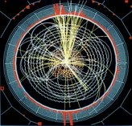

Speakers
 |
2009-2010Ellery Ames and Student Panel ~ 1/25/2010
Jim Imamura ~ 11/17/2009
Dave Hubin & Dean Livelybrooks ~ 11/2/2009
Stephen Gregory ~ 10/20/2009
Note that all speakers are not listed before 2009-2010 2008-2009Jim Schombert~2/4/08
Dick Larsen ~3/3/08
2007-2008Eric Torrence~10/30/07
Steve Kevan Raghu Parthasarathy~11/13/07
Dean Livelybrooks
|